Glassential-renewed
共 114 个条目 · glassential
版本: 3.4.5 · 来源: Glassential-renewed-1.21.1-3.4.5.jar
Various glasses for all your decorative needs.
MC百科页面: https://www.mcmod.cn/class/13279.html（GlassentialRenewed）
官方介绍 （Modrinth · 中文版由 GLM AI 翻译，仅供参考）
已更新到 Minecraft 1.20.1+。改进版本。
自 2.1.0 起需要 Fusion (Connected Textures)
一些模组（例如 Extra Utilities）会为游戏添加一大堆酷炫玻璃。比如可以看穿却阻挡光线的玻璃，或者会发光的玻璃。
你是否想要这些酷炫玩意儿，却又不想为了它们在整合包里塞进一个大体量内容模组？那么别再犹豫，试试 Glassential（极简玻璃）吧。
- 完整支持联动纹理（由 Fusion 实现）！
目前在 1.20.1+ 中添加了以下玻璃和其他内容：
- 发光玻璃（Luminous Glass）： 会发光，就像萤石一样。
- 红石玻璃（Redstone Glass）： 发出强烈的红石信号，就像红石块一样。
- 幽灵玻璃（Ghostly Glass）： 对任何实体都不算实体方块——所有生物都能直接穿过。
- 虚空玻璃（Ethereal Glass）： 仅对玩家不构成实体（玩家可穿过）。
- 反向虚空玻璃（Reverse Ethereal Glass）： 只对玩家（以及流体）构成实体。
- 染色虚空玻璃（Tinted Ethereal Glass）： 兼具原版遮光玻璃与虚空玻璃的特性。
- 染色反向虚空玻璃（Tinted Reverse Ethereal Glass）： 兼具原版遮光玻璃与反向虚空玻璃的特性。
- 玻璃门（Glass Door）： 简单的玻璃门。
- 玻璃活板门（Glass TrapDoor）： 简单的玻璃活板门。
- 由所有 Glassential 方块制成的门与活板门
- 本模组所有玻璃制成的无框玻璃板
- 可染色的染色玻璃门与活板门
- 玻璃台阶
- 原版玻璃已全部替换为联动纹理（CTM）版本
一定要试试我朋友的全新趣味魔法模组！来看看 HexTale ！
我的新装饰模组 -> Lampicus
由 GLM AI 翻译，仅供参考
查看英文原文（Modrinth）
Updated to minecraft 1.20.1+. improved version.
Since 2.1.0 requied Fusion (Connected Textures)
Several mods, such as Extra Utilities, add a bunch of cool glasses to your game. Like glass that you can see through but blocks light or glass that emits light.
Have you ever wanted to get that cool stuff, but without all the overhead of putting a major content mod in your modpack? Well look no further than Glassential.
- Full support connected textures (by fusion)!
Currently adds the following glasses and other features in 1.20.1+:
- Luminous Glass: emits light, just like Glowstone.
- Redstone Glass: emits a strong redstone signal, just like a Block of Redstone.
- Ghostly Glass: non-solid to all entities of any kind.
- Ethereal Glass: non-solid to players.
- Reverse Ethereal Glass: only solid to players (and fluids).
- Tinted Ethereal Glass: the properties of both vanilla Tinted Glass and Ethereal Glass.
- Tinted Reverse Ethereal Glass: the properties of both vanilla Tinted Glass and Reverse Ethereal Glass.
- Glass Door: simple glass door.
- Glass TrapDoor: simple glass trapdoor.
- Doors and trapdoors made of all glassential blocks
- Frameless panels from all glasses of the mod
- Dyed stained glass doors and trapdoors
- Glass slabs
- Vanilla glasses have been completely replaced by connected (CTM)
Be sure to try the new interesting magic mod from my friend! Check HexTale !
My new decor mod -> Lampicus
资料来源：Glassential Renewed
物品与方块
 金合欢木玻璃门
金合欢木玻璃门glassential:acacia_glass_door · 方块
 金合欢木玻璃活板门
金合欢木玻璃活板门glassential:acacia_glass_trapdoor · 方块
 竹玻璃门
竹玻璃门glassential:bamboo_glass_door · 方块
 竹玻璃活板门
竹玻璃活板门glassential:bamboo_glass_trapdoor · 方块
 白桦木玻璃门
白桦木玻璃门glassential:birch_glass_door · 方块
 白桦木玻璃活板门
白桦木玻璃活板门glassential:birch_glass_trapdoor · 方块
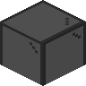
黑色玻璃门glassential:black_glass_door · 方块黑色玻璃活板门
glassential:black_glass_trapdoor · 方块蓝色玻璃门
glassential:blue_glass_door · 方块蓝色玻璃活板门
glassential:blue_glass_trapdoor · 方块
 棕色玻璃门
棕色玻璃门glassential:brown_glass_door · 方块
 棕色玻璃活板门
棕色玻璃活板门glassential:brown_glass_trapdoor · 方块
 樱花木玻璃门
樱花木玻璃门glassential:cherry_glass_door · 方块
 樱花木玻璃活板门
樱花木玻璃活板门glassential:cherry_glass_trapdoor · 方块
 流体澄澈假玻璃
流体澄澈假玻璃glassential:clear_fluid_fake_glass · 方块
 流体澄澈玻璃
流体澄澈玻璃glassential:clear_fluid_glass · 方块
 Colorable Glass
Colorable Glassglassential:colorable_glass · 方块
 Colorable Glass Pane
Colorable Glass Paneglassential:colorable_glass_pane · 方块
 Colorable Stained Glass
Colorable Stained Glassglassential:colorable_stained_glass · 方块
 Colorable Stained Glass Pane
Colorable Stained Glass Paneglassential:colorable_stained_glass_pane · 方块
 绯红木玻璃门
绯红木玻璃门glassential:crimson_glass_door · 方块
 绯红木玻璃活板门
绯红木玻璃活板门glassential:crimson_glass_trapdoor · 方块
 青色玻璃门
青色玻璃门glassential:cyan_glass_door · 方块
 青色玻璃活板门
青色玻璃活板门glassential:cyan_glass_trapdoor · 方块
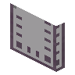
无光缥缈玻璃门glassential:dark_ethereal_door · 方块
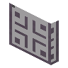
无光反向缥缈玻璃门glassential:dark_ethereal_reverse_door · 方块
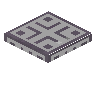
无光反向缥缈玻璃活板门glassential:dark_ethereal_reverse_trapdoor · 方块
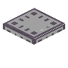
无光缥缈玻璃活板门glassential:dark_ethereal_trapdoor · 方块
 深色橡木玻璃门
深色橡木玻璃门glassential:dark_oak_glass_door · 方块
 深色橡木玻璃活板门
深色橡木玻璃活板门glassential:dark_oak_glass_trapdoor · 方块缥缈玻璃门
glassential:ethereal_door · 方块反向缥缈玻璃门
glassential:ethereal_reverse_door · 方块
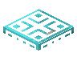
反向缥缈玻璃活板门glassential:ethereal_reverse_trapdoor · 方块
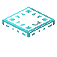
缥缈玻璃活板门glassential:ethereal_trapdoor · 方块
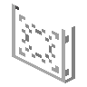
幽灵玻璃门glassential:ghostly_door · 方块
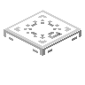
幽灵玻璃活板门glassential:ghostly_trapdoor · 方块
 无光缥缈玻璃
无光缥缈玻璃glassential:glass_dark_ethereal · 方块
 无光缥缈玻璃板
无光缥缈玻璃板glassential:glass_dark_ethereal_pane · 方块
 无光反向缥缈玻璃
无光反向缥缈玻璃glassential:glass_dark_ethereal_reverse · 方块无光反向缥缈玻璃板
glassential:glass_dark_ethereal_reverse_pane · 方块
 玻璃门
玻璃门glassential:glass_door · 方块
 缥缈玻璃
缥缈玻璃glassential:glass_ethereal · 方块
 缥缈玻璃板
缥缈玻璃板glassential:glass_ethereal_pane · 方块
 反向缥缈玻璃
反向缥缈玻璃glassential:glass_ethereal_reverse · 方块
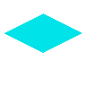
反向缥缈玻璃板glassential:glass_ethereal_reverse_pane · 方块
 幽灵玻璃
幽灵玻璃glassential:glass_ghostly · 方块
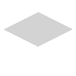
幽灵玻璃板glassential:glass_ghostly_pane · 方块
 荧石灯
荧石灯glassential:glass_glowstone_lamp · 方块
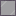
暗色荧石灯glassential:glass_glowstone_lamp_tinted · 方块
 熔岩灯
熔岩灯glassential:glass_lava_lamp · 方块暗色熔岩灯
glassential:glass_lava_lamp_tinted · 方块
 发光玻璃
发光玻璃glassential:glass_light · 方块
 发光玻璃板
发光玻璃板glassential:glass_light_pane · 方块
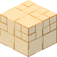
有色发光玻璃glassential:glass_light_tinted · 方块
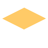
有色发光玻璃板glassential:glass_light_tinted_pane · 方块
 Glassential Brush
Glassential Brushglassential:glass_painter · 物品
 红石玻璃
红石玻璃glassential:glass_redstone · 方块红石玻璃板
glassential:glass_redstone_pane · 方块
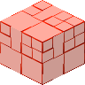
无光红石玻璃glassential:glass_redstone_tinted · 方块
 无光红石玻璃板
无光红石玻璃板glassential:glass_redstone_tinted_pane · 方块
 玻璃台阶
玻璃台阶glassential:glass_slab · 方块
 玻璃活板门
玻璃活板门glassential:glass_trapdoor · 方块
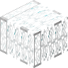
重力玻璃glassential:gravity_glass · 方块
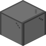
灰色玻璃门glassential:gray_glass_door · 方块灰色玻璃活板门
glassential:gray_glass_trapdoor · 方块
 绿色玻璃门
绿色玻璃门glassential:green_glass_door · 方块
 绿色玻璃活板门
绿色玻璃活板门glassential:green_glass_trapdoor · 方块
 冰玻璃
冰玻璃glassential:ice_glass · 方块
 铁框玻璃
铁框玻璃glassential:iron_glass · 方块
 铁玻璃门
铁玻璃门glassential:iron_glass_door · 方块
 铁玻璃活板门
铁玻璃活板门glassential:iron_glass_trapdoor · 方块
 丛林木玻璃门
丛林木玻璃门glassential:jungle_glass_door · 方块
 丛林木玻璃活板门
丛林木玻璃活板门glassential:jungle_glass_trapdoor · 方块
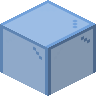
淡蓝色玻璃门glassential:light_blue_glass_door · 方块淡蓝色玻璃活板门
glassential:light_blue_glass_trapdoor · 方块
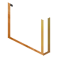
发光玻璃门glassential:light_door · 方块
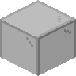
淡灰色玻璃门glassential:light_gray_glass_door · 方块
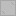
淡灰色玻璃活板门glassential:light_gray_glass_trapdoor · 方块
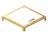
发光玻璃活板门glassential:light_trapdoor · 方块
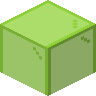
黄绿色玻璃门glassential:lime_glass_door · 方块黄绿色玻璃活板门
glassential:lime_glass_trapdoor · 方块品红色玻璃门
glassential:magenta_glass_door · 方块
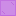
品红色玻璃活板门glassential:magenta_glass_trapdoor · 方块
 红木玻璃门
红木玻璃门glassential:mangrove_glass_door · 方块
 红木玻璃活板门
红木玻璃活板门glassential:mangrove_glass_trapdoor · 方块
 橡木玻璃门
橡木玻璃门glassential:oak_glass_door · 方块
 橡木玻璃活板门
橡木玻璃活板门glassential:oak_glass_trapdoor · 方块
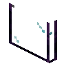
黑曜石玻璃门glassential:obsidian_door · 方块
 黑曜石玻璃
黑曜石玻璃glassential:obsidian_glass · 方块
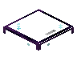
黑曜石玻璃活板门glassential:obsidian_trapdoor · 方块
 单向玻璃
单向玻璃glassential:one_way_glass · 方块
 橙色玻璃门
橙色玻璃门glassential:orange_glass_door · 方块
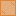
橙色玻璃活板门glassential:orange_glass_trapdoor · 方块
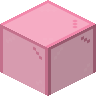
粉色玻璃门glassential:pink_glass_door · 方块
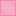
粉色玻璃活板门glassential:pink_glass_trapdoor · 方块紫色玻璃门
glassential:purple_glass_door · 方块
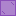
紫色玻璃活板门glassential:purple_glass_trapdoor · 方块
 红色玻璃门
红色玻璃门glassential:red_glass_door · 方块
 红色玻璃活板门
红色玻璃活板门glassential:red_glass_trapdoor · 方块
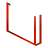
红石玻璃门glassential:redstone_door · 方块
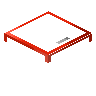
红石玻璃活板门glassential:redstone_trapdoor · 方块
 砂岩框玻璃
砂岩框玻璃glassential:sandstone_glass · 方块
 云杉木玻璃门
云杉木玻璃门glassential:spruce_glass_door · 方块
 云杉木玻璃活板门
云杉木玻璃活板门glassential:spruce_glass_trapdoor · 方块
 石框玻璃
石框玻璃glassential:stone_glass · 方块
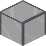
遮光玻璃门glassential:tinted_glass_door · 方块
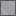
遮光玻璃活板门glassential:tinted_glass_trapdoor · 方块
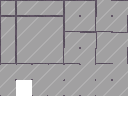
Tinted One Way Glassglassential:tinted_one_way_glass · 方块
 诡异木玻璃门
诡异木玻璃门glassential:warped_glass_door · 方块
 诡异木玻璃活板门
诡异木玻璃活板门glassential:warped_glass_trapdoor · 方块
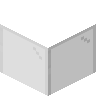
白色玻璃门glassential:white_glass_door · 方块白色玻璃活板门
glassential:white_glass_trapdoor · 方块
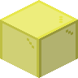
黄色玻璃门glassential:yellow_glass_door · 方块
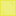
黄色玻璃活板门glassential:yellow_glass_trapdoor · 方块